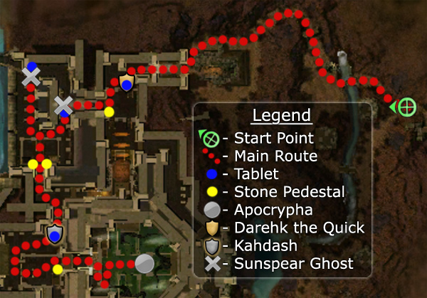

◉ Mission Map

Click to enlarge · Local cache · Wiki
Summary (click to expand)
Investigate the ruins of Fahranur, The First City with Kormir to find what is killing the workers.
Region: Istan · Mission: 2 of 20 · Type: Cooperative
Required hero: Melonni
✓ Objectives
Travel to the ancient Istani ruins.
- Obtain the tablet from Darehk and place it on the stone pedestal.
- Place the two tablets on the pedestals.
- Guard Kahdash while he places the tablet on the pedestal.
- Find and defeat the Apocrypha.
- Kormir must survive.
- *BONUS* Do not harm any Sunspear Ghosts.
→ Walkthrough

Make your way west to the ruins of Fahranur, The First City. The building has two crushing devices which can be detected by the noises and marks on the ground. Avoid death by walking under them when the weight is lifting - you have 13 seconds to do so. There are also traps that fire Madness Darts (first section) and Burning (second section) at the party.
Beyond the first crusher awaits Darehk the Quick, who is carrying a tablet. Kill him, retrieve the tablet and place it on the stone pedestal to enter the next area. Your party gains a morale boost each time a gate is opened. The undead will resurrect after a while, so do not stay in any one area too long.
The second area has two tablets which have to be placed on the pedestals together, as the Sunspear Ghosts will attempt to take them back.
- Single players have to leave the first tablet on the ground (drop it near, but not on the pedestal) somewhere near the third gate and head east to pick up the second tablet, place it, and then re-take the one that was left on the floor on the second pedastal.
- Groups with more than one player can assign two out of the three to carry the tablets, preferably caster professions.
Be careful of the fire and cripple causing flame jets, especially with Kormir as she can die if standing next to one, failing the mission.
In the third area, another ghost named Kahdash will be holding a tablet. But this time he will carry it to the pedestal for you, asking for protection from the undead. If Kahdash dies, he will respawn at his original location and begin again.
Finally at the sealed chamber, kill the Skeletons as you head down towards the Apocrypha, the final boss. The Apocrypha changes professions periodically between Mesmer, Dervish and Paragon by activating Reform Carvings.
★ Bonus
To gain the bonus, players have to complete the sequence in section two without harming the Sunspear Ghosts. By "not harming", the game means not killing them. (These NPCs can still sustain small amounts of damage, e.g. from Kormir's spear attacks.) Since Kormir will follow your party leader, pulling her away prevents her killing the ghosts. Abstain from summoning mindless allies (e.g. minions, spirits, NPCs from summoning stones, etc.) when nearby the Sunspear Ghosts. Also be careful when target calling, since henchmen and heroes can easily spike the ghosts - set heroes to Avoid Combat mode and disable aggressive skills when in the second room. Whilst the fire jets can harm other enemies, the ghosts are invulnerable to them. To get the Master's Reward, you must also prevent Kahdash from being killed.
◆ Hard Mode
The hazards in this mission will pressure the party healer. Luckily the required hero is Melonni and dervishes can perform roles other than just damage. (There is nothing to stop you from bringing more than one healer.)
It is unlikely that the players running tablets will be able to evade the undead without support due to tougher and more dogged opponents.
The undead's corpses do not disappear, and they resurrect after 2 and a half minutes. If more time is needed in an area with undead, consider killing them in a remote location so that when they resurrect you will be out of aggro.
☠ Bosses & Elites
See wiki for boss list (or none listed).
✦ Tips & Notes
Skill recommendations
- Holy damage skills to easily fight the undead.
- Hex removal.
- In Hard mode, the undead use Tainted Flesh, bring appropriate counters.
Notes
- Dying from being crushed by the falling crushers does not cause Death Penalty or count as a death against the Survivor title track.
- After completing this mission, your party will be taken to Kamadan, Jewel of Istan.
- Even though General Morgahn only appears during a cinematic, if there are General Morgahn heroes in your party, they all will be renamed as "Kournan Paragon".
- If the respawning undead are killed on one of the flame jets, they will continuously spawn and die to the jets as long as you stay away from them.
- Completion of this mission in Hard Mode will fill in page #12 of the Young Heroes of Tyria storybook.